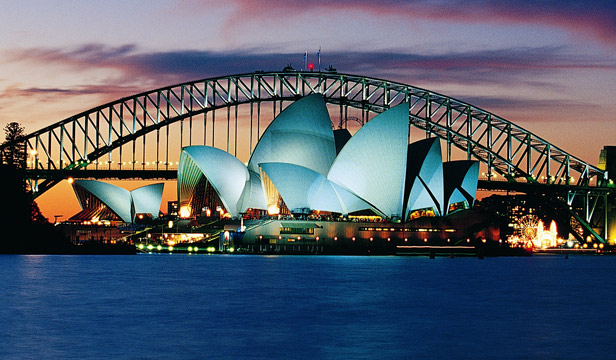

Sydney is the state capital of New South Wales and the most populous city in Australia and Oceania. It is located on Australia's south-east coast along the Tasman Sea and surrounding one of the world's largest natural harbours. Residents are together known as "Sydneysiders" and constitute the most multicultural city in Australia and one of the most multicultural cities in the world